- 您的当前位置：
- 首页
- 民族好声音
- 两会、党代会民族语文翻译工作
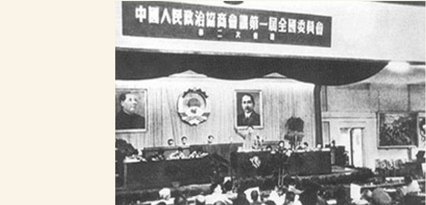
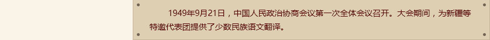
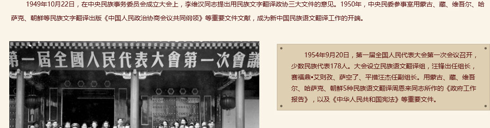
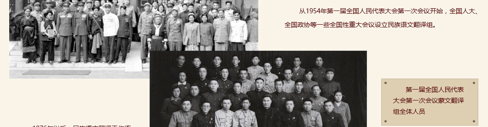
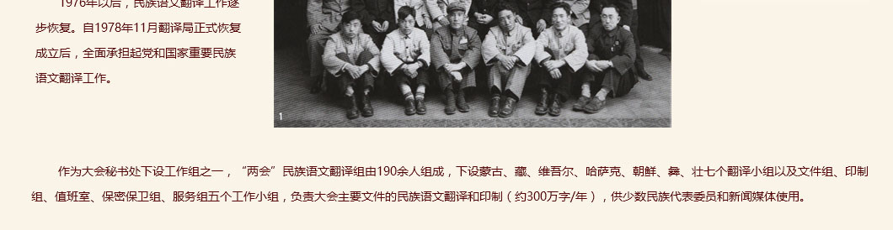
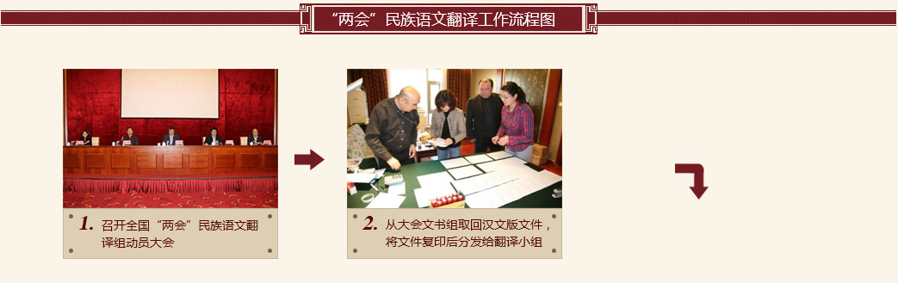
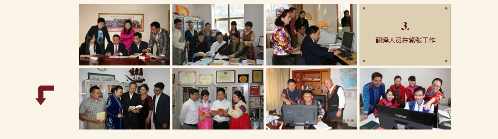
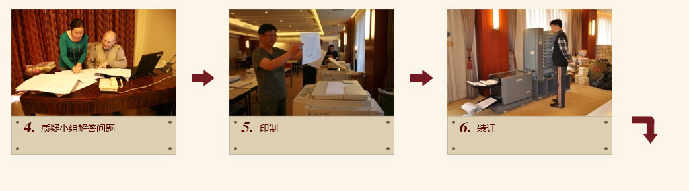
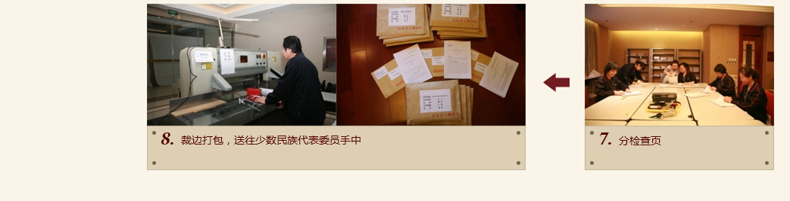
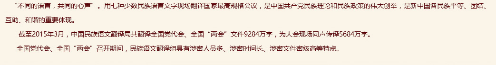

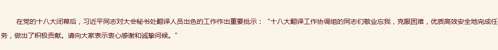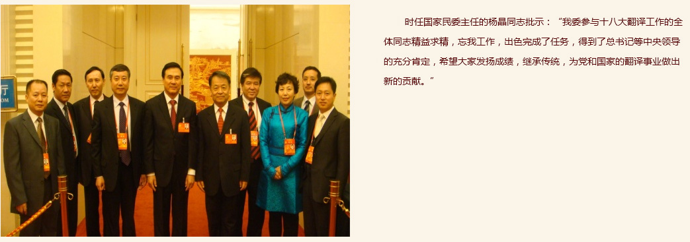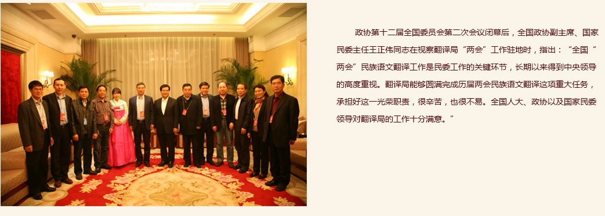
| 十六大会议期间，时任翻译局党委书记、局长丹珠昂奔接受中外记者采访。 | 2013年，时任翻译局党委书记、局长李建辉接受中央电视台记者采访。 | 2015年，翻译局党委书记兰智奇在人民大会堂同传工作间接受中央电视台记者采访。 | 2015年，翻译局局长阿力木沙比提在工作驻地接受中央电视台记者采访。 | |||
| 2015年，翻译局党委书记兰智奇、局长阿力木沙比提在人民大会堂接受《人民政协报》记者专访。 | 十六大期间，哈萨克斯坦共和国电视台采访哈萨克语文室托列根同志。 | 记者现场实录民族语文翻译组工作场景 | 网络媒体对大会民族语文翻译工作的报道 |